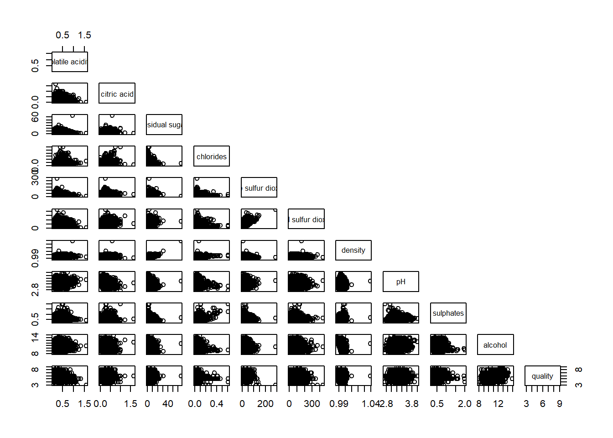
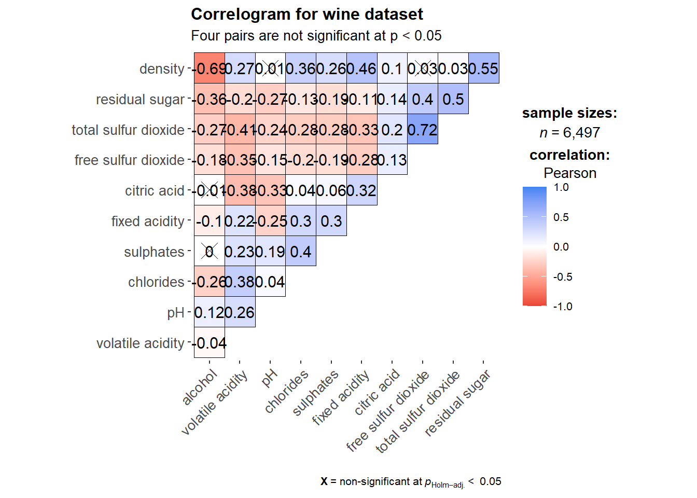
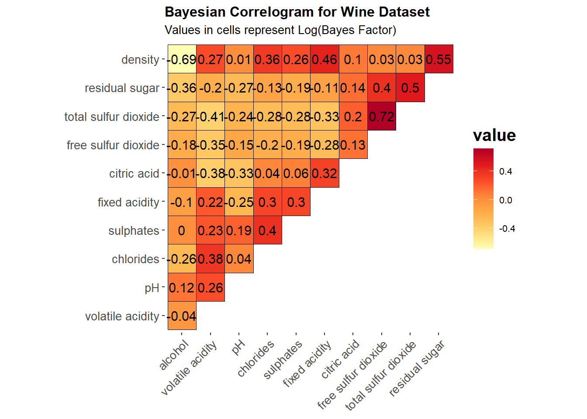
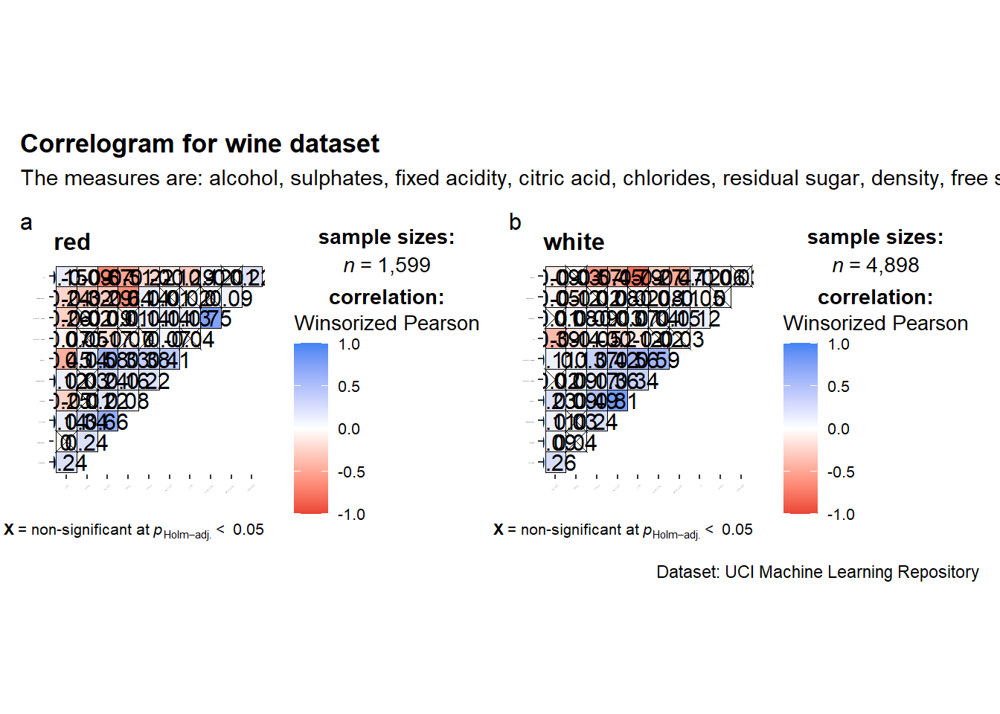

pacman::p_load(corrplot, ggstatsplot, tidyverse)Hands-on_Ex05B
Visual Correlation Analysis
Correlation coefficient is a popular statistic that use to measure the type and strength of the relationship between two variables. The values of a correlation coefficient ranges between -1.0 and 1.0. A correlation coefficient of 1 shows a perfect linear relationship between the two variables, while a -1.0 shows a perfect inverse relationship between the two variables. A correlation coefficient of 0.0 shows no linear relationship between the two variables.
When multivariate data are used, the correlation coefficeints of the pair comparisons are displayed in a table form known as correlation matrix or scatterplot matrix.
There are three broad reasons for computing a correlation matrix.
To reveal the relationship between high-dimensional variables pair-wisely.
To input into other analyses. For example, people commonly use correlation matrices as inputs for exploratory factor analysis, confirmatory factor analysis, structural equation models, and linear regression when excluding missing values pairwise.
As a diagnostic when checking other analyses. For example, with linear regression a high amount of correlations suggests that the linear regression’s estimates will be unreliable.
When the data is large, both in terms of the number of observations and the number of variables, Corrgram tend to be used to visually explore and analyse the structure and the patterns of relations among variables. It is designed based on two main schemes:
Rendering the value of a correlation to depict its sign and magnitude, and
Reordering the variables in a correlation matrix so that “similar” variables are positioned adjacently, facilitating perception.
Tip
The Corrgram is a good read, learning about partial correlation charts and its importance in scenarios to dispel Simpon’s paradox
The Dataset
In this hands-on exercise, the Wine Quality Data Set of UCI Machine Learning Repository will be used. The data set consists of 13 variables and 6497 observations. For the purpose of this exercise, we have combined the red wine and white wine data into one data file. It is called wine_quality and is in csv file format.
wine <- read_csv("data/wine_quality.csv")
head(wine)# A tibble: 6 × 13
`fixed acidity` `volatile acidity` `citric acid` `residual sugar` chlorides
<dbl> <dbl> <dbl> <dbl> <dbl>
1 7.4 0.7 0 1.9 0.076
2 7.8 0.88 0 2.6 0.098
3 7.8 0.76 0.04 2.3 0.092
4 11.2 0.28 0.56 1.9 0.075
5 7.4 0.7 0 1.9 0.076
6 7.4 0.66 0 1.8 0.075
# ℹ 8 more variables: `free sulfur dioxide` <dbl>,
# `total sulfur dioxide` <dbl>, density <dbl>, pH <dbl>, sulphates <dbl>,
# alcohol <dbl>, quality <dbl>, type <chr>Building Correlation Matrix: pairs() method
Figure below shows the scatter plot matrix of Wine Quality Data. It is a 11 by 11 matrix.
pairs(wine[,1:11])
The required input of pairs() can be a matrix or data frame. The code chunk used to create the scatterplot matrix is relatively simple. It uses the default pairs function. Columns 2 to 12 of wine dataframe is used to build the scatterplot matrix. The variables are: fixed acidity, volatile acidity, citric acid, residual sugar, chlorides, free sulfur dioxide, total sulfur dioxide, density, pH, sulphates and alcohol.
pairs(wine[2:12])
To show lower panel only
pairs(wine[,2:12], upper.panel = NULL)
to show upper panel only
pairs(wine[,2:12], upper.panel = NULL)
Including with correlation coefficients
To show the correlation coefficient of each pair of variables instead of a scatter plot, panel.cor function will be used. This will also show higher correlations in a larger font.
panel.cor <- function(x, y, digits=2, prefix="", cex.cor, ...) {
usr <- par("usr")
on.exit(par(usr=usr))
par(usr = c(0, 1, 0, 1))
r <- abs(cor(x, y, use="complete.obs"))
txt <- format(c(r, 0.123456789), digits=digits)[1]
txt <- paste(prefix, txt, sep="")
if(missing(cex.cor)) cex.cor <- 0.8/strwidth(txt)
text(0.5, 0.5, txt, cex = cex.cor * (1 + r) / 2)
}
pairs(wine[,2:12],
upper.panel = panel.cor)
Visualising Correlation Matrix: ggcormat()
One of the major limitation of the correlation matrix is that the scatter plots appear very cluttered when the number of observations is relatively large (i.e. more than 500 observations). To over come this problem, Corrgram data visualisation technique suggested by D. J. Murdoch and E. D. Chow (1996) and Friendly, M (2002) and will be used.
The are at least three R packages provide function to plot corrgram, they are:
On top that, some R package like ggstatsplot package also provides functions for building corrgram.
The basic plot
# Feels similar to seaborn heatmap
ggstatsplot::ggcorrmat(
data = wine,
cor.vars = 1:11)
ggstatsplot::ggcorrmat(
data = wine,
cor.vars = 1:11,
ggcorrplot.args = list(outline.color = "black",
hc.order = TRUE,
tl.cex = 10),
title = "Correlogram for wine dataset",
subtitle = "Four pairs are not significant at p < 0.05"
)
Things to learn from the code chunk above:
cor.vars argument is used to compute the correlation matrix needed to build the corrgram.
ggcorrplot.args argument provide additional (mostly aesthetic) arguments that will be passed to ggcorrplot::ggcorrplot function. The list should avoid any of the following arguments since they are already internally being used: corr, method, p.mat, sig.level, ggtheme, colors, lab, pch, legend.title, digits.
The sample sub-code chunk can be used to control specific component of the plot such as the font size of the x-axis, y-axis, and the statistical report
ggplot.component = list( theme(text=element_text(size=5), axis.text.x = element_text(size = 8), axis.text.y = element_text(size = 8)))
Note
hc.order = True refers to using hierarchical clustering to put similar variables together while tl.cex = 10: Adjusts the text label size for the variable names so they are readable even if the matrix is large.
The current default uses p value, a bayesian approach can also be used by changing type = ‘bayes’
#Changing the color to better show that this is different from the above plots
ggstatsplot::ggcorrmat(
data = wine,
cor.vars = 1:11,
type = "bayes",
ggcorrplot.args = list(outline.color = "black",
hc.order = TRUE,
tl.cex = 10),
title = "Bayesian Correlogram for Wine Dataset",
subtitle = "Values in cells represent Log(Bayes Factor)"
) + scale_fill_distiller(palette = "YlOrRd", direction = 1)
Note
After switching from frequentist to bayes, none of the plot was crossed out.
A quick search: While the frequentist approach suggests four pairs are non-significant, the Bayesian approach reveals that these relationships are ‘anecdotal’ (\(1 < BF_{10} < 3\)) rather than definitively absent, providing a more nuanced view of the chemical interactions in the wine
Some examples of interpretation
\(log_e(BF_{10})\): This is the “Log-Bayes Factor.” We use logs because Bayes Factors can become massive (e.g., 1,000,000).Positive number (e.g., 5): Strong evidence for a relationship.Negative number (e.g., -2): Evidence against a relationship (supports the null).Near 0: The data is “inconclusive” or “anecdotal.”
\(BF_{10} = 10\): The data is 10 times more likely under the “Relationship” model than the “No Relationship” model.
Building multiple plots
Since ggstasplot is an extension of ggplot2, it also supports faceting. However the feature is not available in ggcorrmat() but in the grouped_ggcorrmat() of ggstatsplot.
grouped_ggcorrmat(
data = wine,
cor.vars = 1:11,
grouping.var = type,
type = "robust",
p.adjust.method = "holm",
plotgrid.args = list(ncol = 2),
ggcorrplot.args = list(outline.color = "black",
hc.order = TRUE,
tl.cex = 0.7),
annotation.args = list(
tag_levels = "a",
title = "Correlogram for wine dataset",
subtitle = "The measures are: alcohol, sulphates, fixed acidity, citric acid, chlorides, residual sugar, density, free sulfur dioxide and volatile acidity",
caption = "Dataset: UCI Machine Learning Repository"
)
)